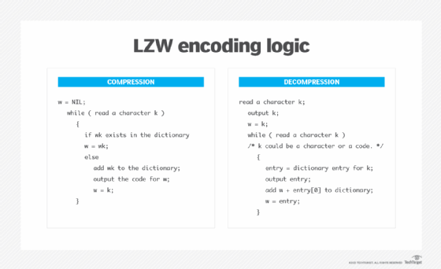

| Chan Yue Ting (57276040) | Lau Foo Kiu (56616932) | Pan Ching Man (56623253) | Yau Kam Chau (57850287) | Yau Wing Yan (56611870) |
Tag Image File Format(TIFF) is a image format for storing raster graphic, specially for interoperability and high-quality image preservation. Popular in graphic and photo editing.It support Lossy and Lossless Compression in the same time.
| Advantage | Disadvantage |
|---|---|
| Layer Support:TIFF famously by it multiple layer support. User able to save and edit multiple layers in a signle file. | Incompatibility Issues:Lossy TIFF not universally supported by all devices, which may lead to accessibility problems. |
| Ideal For Printing:TIFF generate high quailty of image for printing. | Limit in Size: The largest size of TIFF are limited at 4GB. |
| Flexible Compression Options:TIFF format able to choose between Lossy and Lossless. Allow users to choose between for their own needs. | Complexity of TIFF files: Not all the applications able to read the tag from TIFF correctly, which will lead to incorrect display. |
|  | |
|---|---|
| Step 1: InitalizeStart with a dictionary containing all possible byte values. | Step 5: Output CodeOutput the dictionary code to recognized sequence, and start a new sequence with the next symbol. |
| Step 2: Read InputBegin to read the input data sequence to be compressed. | Step 6: RepeatRepeat the process of checking and adding sequences until all the input data processed. | Step 3: Check for Sequence in DictionaryFor each input sequence, check is it existed. | Step 7: Flush Remaining DataOutput the last sequence of the code. | Step 4: Add New Sequence in the DictionaryIf the algorithms find the sequences is not in the dictionary, will add a new on and output the code for the longest existing sequence. |